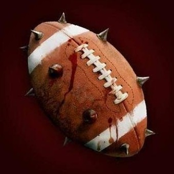

Contexte
La Balle Sanglante est un « sport » inventé par les orcs. À l'origine il s'agissait, après une bataille, de libérer l’adrénaline des vainqueurs. Ceux-ci étaient alors divisés en deux groupes et devaient marquer des points en franchissant une ligne, tout en tenant en main la tête du chef de la tribu vaincue. Tous les coups étaient permis.
Les règles
Ce principe a ensuite été un peu civilisé et voici les règles du jeu tel qu'il est pratiqué de nos jours dans la région des Deux Lacs :
- Le terrain fait 72 x 45 mètres.
- Deux équipes de 10 joueurs chacune s'affrontent. De 0 à 4 remplaçants sont autorisés.
- Les joueurs sont torse-nu (les maillots étaient généralement complètement déchirés après la première minute de jeu) et portent un pantalon de la couleur de leur équipe.
- Un match dure 3 tiers-temps de 10 minutes chacun, soit 3 fois 100 rounds (temps de jeu effectif, le sablier est arrêté à chaque interruption).
- Un but est marqué lorsqu'un joueur franchit la ligne adverse balle en main.
- À chaque engagement (début de tiers-temps ou après un but) la balle est lancée en l'air au milieu du terrain par un arbitre.
- Il est interdit de faire une passe en arrière et/ou de taper la balle avec les pieds (la Balle Sanglante est un sport de conquête et de contact).
- On ne peut frapper un autre joueur que si on joue la balle (faite en peau d'ookhab), c'est-à-dire si on la touche.
- Il est interdit de donner un coup mortel volontairement.
- Les arbitres peuvent administrer des cartons aux joueurs qui commettent des fautes trop évidentes. Lorsqu'il reçoit un carton, le joueur doit aller s'asseoir sur le banc de touche pour une durée qui dépend de la gravité de la faute. La fin d'un tiers-temps annule tous les cartons en cours.
Le tournoi de Balle Sanglante de Laelith
DE L'HISTOIRE DES CARTONS
Dans les règles orcs de la Balle Sanglante, les arbitres utilisent des bâtons en forme de battes qu'ils appellent « Kart'ôn ». Et lorsque les arbitres constatent une faute ils donnent un coup de Kart'ôn au fautif. Le coup est plutôt léger pour une petite faute et provoque généralement une contusion bleue-jaune. Dans le cas d'une faute lourde, le coup est bien plus puissant et fait souvent saigner. Cette utilisation du Kart'ôn était très dissuasive. Toutefois, dans le jeu civilisé, le bâton a disparu et son nom orc a inspiré l'usage des cartons de couleur associés aux expulsions de terrains suivant la gravité de la faute.
Issus des carnets de notes d'Ylu Tetedonyx.
Après plusieurs années d'absence, les autorités de Laelith ont décidé de relancer le tournoi. Dans quelques jours aura donc lieu, au Théâtre de la cité sainte, le coup d'envoi du prochain Grand Tournoi de Balle Sanglante, organisé par le Cercle des quatre temples.
En voici les grands principes :
- Entre 12 et 16 équipes sont attendues.
- Ces équipes seront divisées en 2 poules. Après les matchs de poules, les vainqueurs de chaque groupe affronteront en demi-finales les seconds de la poule adverse. Puis les deux vainqueurs participeront à la grande finale du Super Bol, du nom du trophée qui ira au vainqueur.
- Un match gagné donne 2 points, un match nul 1 point, un match perdu 0 point.
- Pour départager d'éventuels ex-aequos, on donnera en premier lieu la préférence à l'équipe qui a gagné le plus de matchs. Ensuite on regardera qui des ex-aequos, durant les matchs de poule, a gagné l'autre. Pour les demi-finales et la final, en cas d'ex-aequos, le dernier tiers-temps est prolongé jusqu'au prochain but.
- Jusqu'à 4 remplaçants par équipe et par match sont autorisés. Les changements ne peuvent se faire que pendant l'une des deux pauses, pas pendant le jeu.
- De même, un joueur qui sort pour blessure ne pourra rentrer en jeu qu'après l'une des deux pauses.
- Il est interdit de s'en prendre aux deux arbitres (lesquels se trouvent de chaque coté du terrain, et non pas au milieu des joueurs, car cela serait trop dangereux) pendant le match, sous peine de sanction.
- Les armes, les mécanismes et la magie sont formellement interdits à l'intérieur de l'enceinte de jeu. Un contrôle systématique sera effectué avant chaque match.
- Un prêtre guérisseur, désigné par les organisateurs, sera gracieusement mis à la disposition de chaque équipe pour la durée des matchs.
- Un coach qui n'assiste pas au match de son équipe sera disqualifié et remplacé dès le match suivant.
- Les décisions du Conseil des quatre temples sont indiscutables et aucune contestation ne sera admise.
- Tous les points cités précédemment sont susceptibles d'évoluer sans aucun préavis.
Récompenses
La recette de chaque match (hormis la finale) sera répartie ainsi : 50% pour les organisateurs et 25% pour chaque équipe. Le Conseil des quatre temples espère ainsi que les équipes offriront le meilleur spectacle possible (le public de Laelith est difficile, il n'ira pas voir en masse des équipes qui n'offrent pas un bon jeu).
Le gagnant du championnat se verra attribuer la somme de 5 000 pièces d'or sonnantes et trébuchantes, ainsi que le trophée en or du Super Bol, lequel devra être remis en jeu lors du tournoi suivant. Le perdant de la finale recevra pour sa part 1 000 pièces d'or.